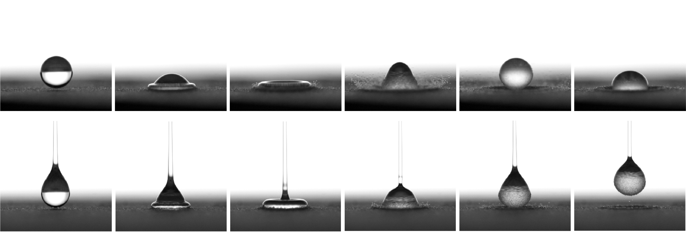
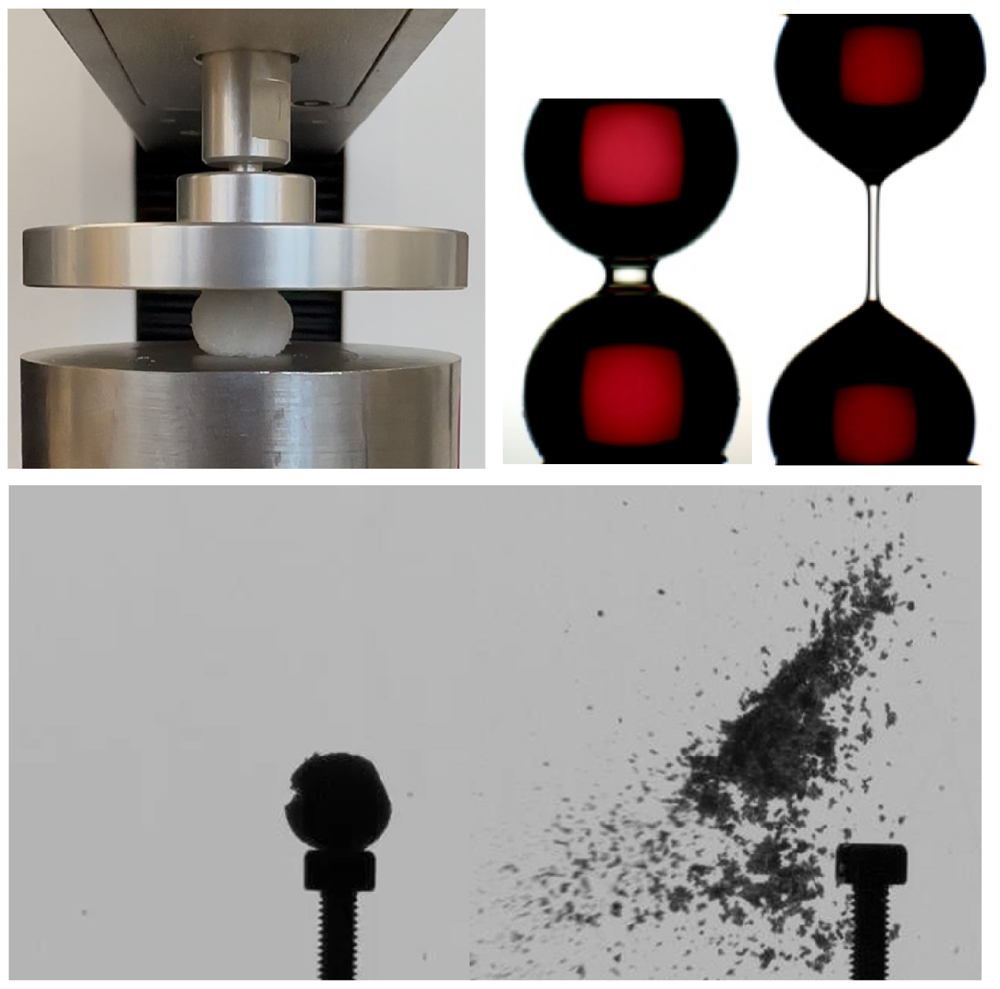
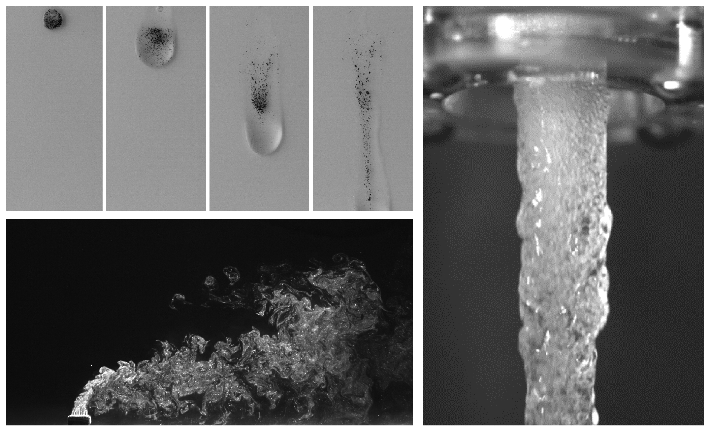

Research
Transportation and Erosion of Granular Matter

Granular materials are transported, deformed, and eroded by surrounding fluids in many natural, industrial, and manufacturing processes, from soil erosion and landslides to powder handling and binder-jetting additive manufacturing. Predicting these processes remains challenging because the macroscopic response of a granular bed depends on fluid motion, particle wettability, packing structure, capillary transport, and interparticle cohesion. In drop impact, for example, the final morphology of the bed is shaped by both the mechanical response of the grains and the rheological behavior of the impacting liquid.
My research addresses these questions through controlled experiments with Newtonian and non-Newtonian droplets, including polymer solutions, impacting model granular beds. Using high-speed imaging and quantitative image analysis, I track both the deformation of the liquid and the evolving shape of the granular surface during and after impact. I vary particle wettability, from hydrophilic to hydrophobic grains, to examine how liquid–grain interactions alter bed deformation and pore-scale transport. This approach provides a basis for physics-based scaling and modeling, while also connecting droplet–grain dynamics to binder jetting, soil erosion, hydrophobic soil-layer deformation, and shear-driven transport in cohesive and non-cohesive granular beds.
Cohesion and Fragmentation
Cohesive particle aggregates are important in natural and engineered systems, including soils, pharmaceutical granules, food powders, catalyst pellets, and additively manufactured particulate materials. While fragmentation has been widely studied in liquids and solids, the breakup of particle aggregates held together by binder bridges remains less understood. My research investigates how liquid (Newtonian/non-Newtonian), brittle solid, and nanoparticle-based binders control aggregate strength, failure, and interaction with turbulent flows. By combining controlled experiments with physics-based modeling, I aim to identify fragmentation regimes that connect binder-scale cohesion to aggregate-scale breakup.

Multiphase Flows

Multiphase flows involving particles, droplets, bubbles, and interfaces are central to engineering and environmental systems, from chemical processing and thermal-fluid devices to biological, atmospheric, and aerospace flows. My research focuses on how interactions among phases shape flow structure, transport, and dispersion. During my Ph.D., I studied particle-laden gas flows and showed how vortical structures, particle inertia, and humid-air-induced agglomeration govern particle dispersion. I have also investigated bubbly jets, particle-laden drops, and bubbly flows under temperature gradients to understand how interphase interactions control multiphase transport.